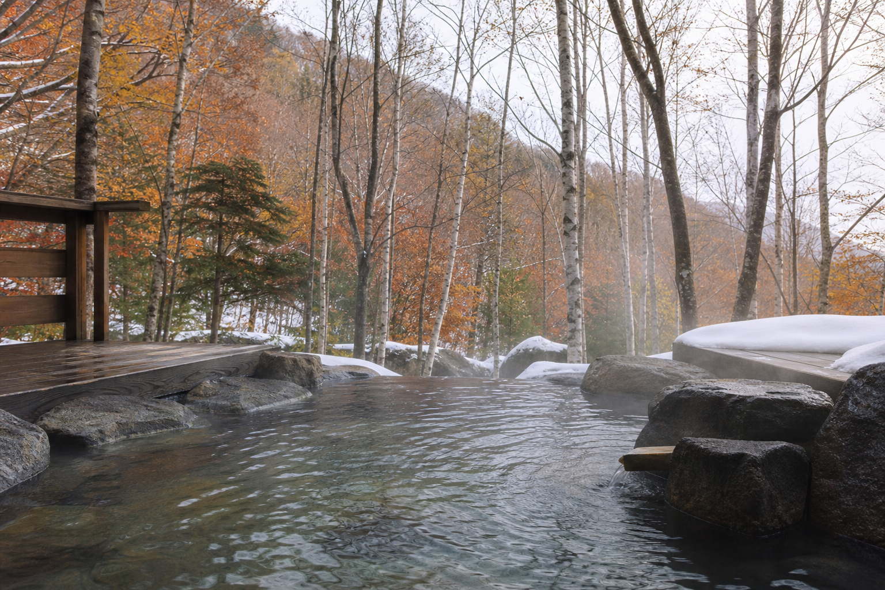

付近の温泉
源泉掛け流しが
日常にあるエリア
七戸周辺は、温泉好きからも「掛け流し天国」と評されるエリア。モール泉やアルカリ性単純温泉——琥珀色の湯が浴槽からシャワーまで惜しみなく流れる施設もあります。
入浴料300円台から、地元の方と一緒に2〜3軒はしごするのも、滑走後の定番です。
七戸周辺の温泉特集
Access
付近の温泉
七戸周辺は、温泉好きからも「掛け流し天国」と評されるエリア。モール泉やアルカリ性単純温泉——琥珀色の湯が浴槽からシャワーまで惜しみなく流れる施設もあります。
入浴料300円台から、地元の方と一緒に2〜3軒はしごするのも、滑走後の定番です。
七戸周辺の温泉特集
Access